Overview
In this project, I implemented a program that rasterizes SVG file. In other words, my program converts SVG files to PNG images. I have added different sampling techniques to compare the advantages and disadvantages of each.
Section I: Rasterization
Part 1: Rasterizing single-color triangles
In this part, I had to implement triangle rasterization using the methods discussed in lecture 2. The first technique that I used consisted in sampling if each pixel center is inside the triangle given by the three points.
Therefore I had a function that checked whether a given point is inside a triangle:
\[inside(t, x, y) =\begin{cases}
1 \text{ $(x, y)$ in triangle t}\\
0 \text{ otherwise}
\end{cases}
\]
The inside triangle function is calculated by using the three line equations of each edge. An edge has the following line equation given a point $(x,y)$ and the line define by the two points $(x_0,y_0)$ and $(x_1,y_1)$:
\[L(x,y) = -(x-x_0)(y_1-y_0)+(y-y_0)(x_1-x_0)\]
where $L(x,y)=0$ if the point is on the line, $L(x,y)>0$ if the point is above the line, and $L(x,y)<0$ if the point is below the line.
Thus,
inside(t, x, y) = L0(x,y) > 0 && L1(x,y) > 0 && L2(x,y) > 0, where L0, L1, L2 represents the 3 line equations proved in class of a triangle. By doing some debugging I realized that we couldn't make the assumption that triangles would be given in a counter clockwise direction. Therefore, the inside function must then be defined by
inside(t, x, y) = (L0(x,y) > 0 && L1(x,y) > 0 && L2(x,y) > 0) || (L0(x,y) <= 0 && L1(x,y) <= 0 && L2(x,y) <= 0) (as it is impossible for a point to be outside a triangle and in the same direction of each edge).
In other words, my pseudocode was the following:
for (int x = xmin; x < xmax; x++){
for (int y = ymin; y < ymax; y++){
Image[x][y] = inside(t, x + 0.5, y + 0.5);
}
}
To find the bounding box I took the the minimum x and y values of each of the points as well as the maximum. I then had to floor the minimum to make sure I don't forget any pixels during the rounding process and then took the ceiling of the maximum for the similar reason.
int xMin = floor(std::min(std::min(x0, x1), x2));
int xMax = ceil(std::max(std::max(x0, x1), x2));
int yMin = floor(std::min(std::min(y0, y1), y2));
int yMax = ceil(std::max(std::max(y0, y1), y2));
I then added the following if statements to make sure that the triangles wouldn't go over the borders:
if (xMin < 0)
xMin = 0;
if (yMin < 0)
yMin = 0;
if (xMax > width)
xMax = width;
if (yMax > height)
yMax = height;
The xMin and yMin variables cannot be less than 0 as they are the origin. The xMax cannot be more than the width. The yMax cannot be more than the height.
To implement
SampleBuffer::fill_color, I simply created a vector of unsigned char and appended the r, g, b, a values on a 255 scale and then filled the PixelColorStorage.
Using this technique I obtained the following images:
|
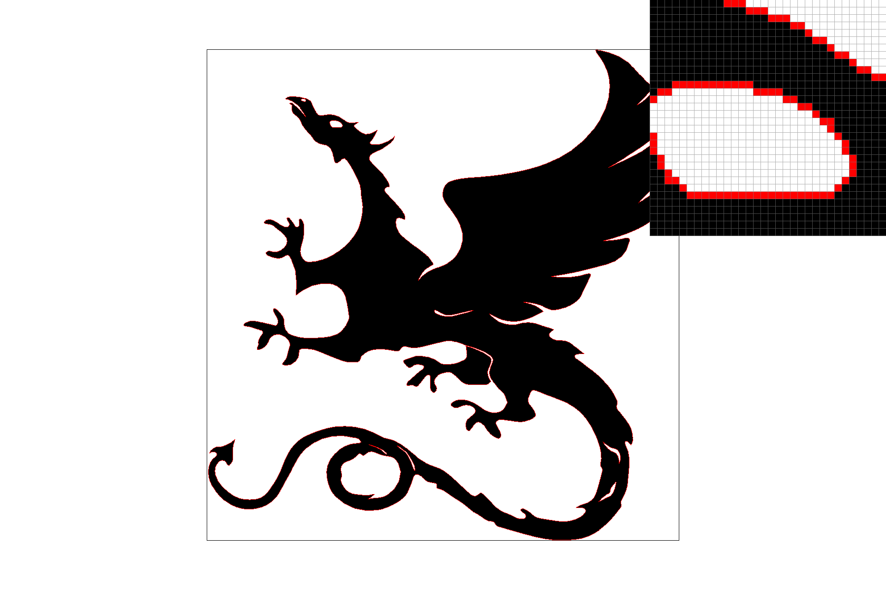
SVG3 Generated in 0.172379s.
|
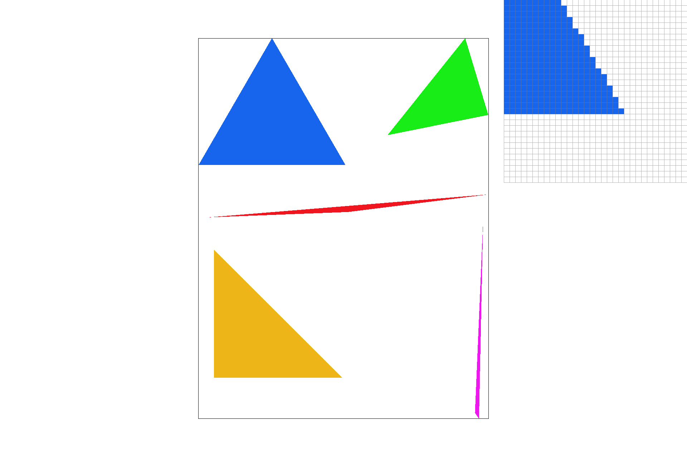
SVG4 Generated in 0.1072s.
|
|
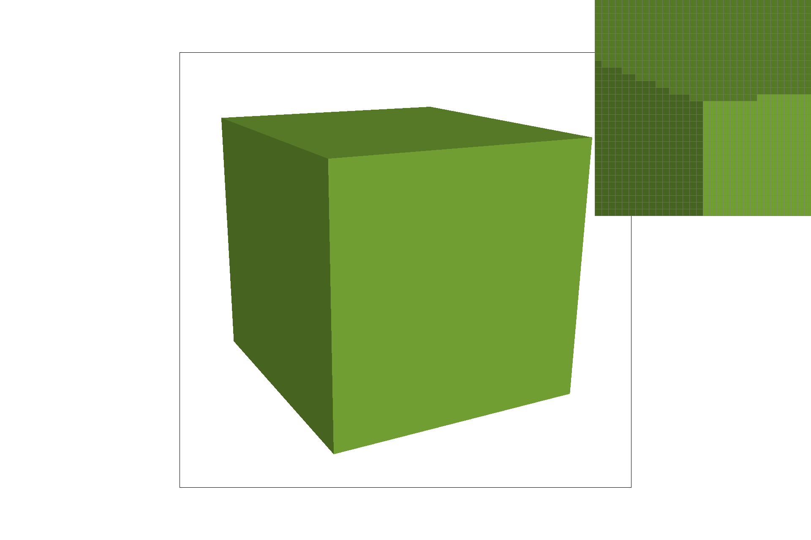
SVG5 Generated in 0.214763s.
|
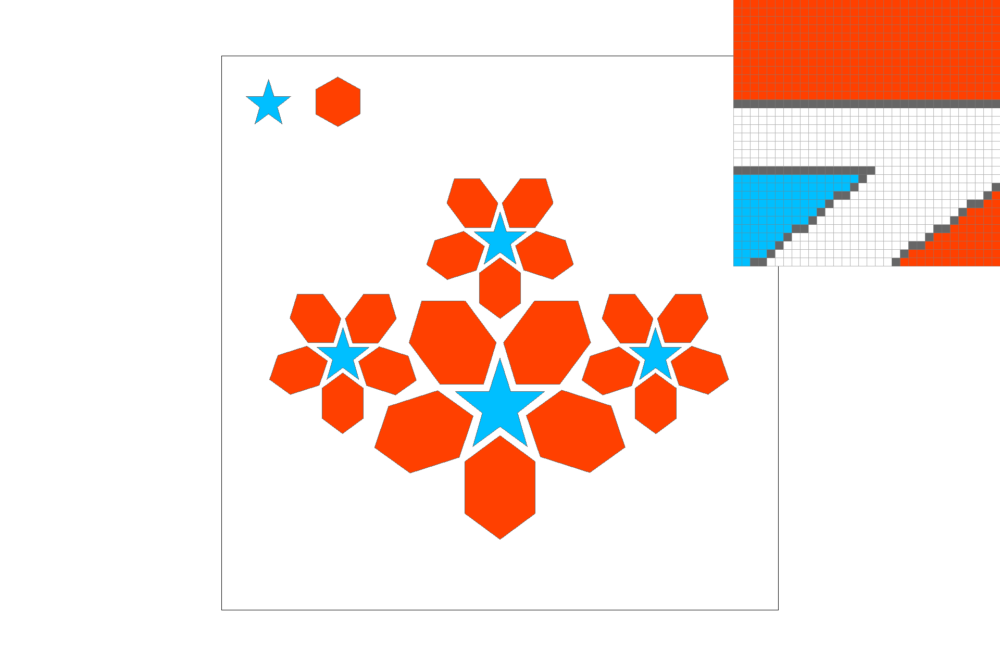
SVG6 Generated in 0.096931s.
|
EXTRA CREDIT: Incremental Triangle Traversal
For the extra credit, I decided to implement the incremental triangle traversal technique. I struggled writing this code as there are multiple edge cases to make the code work. To write this code, I read online more about the different techniques available to write the code in an efficient manner. I found a US Patent that was especially helpful for me to write the code called
"Method and apparatus for triangle traversal process in graphic rasterization" . This technique is very similar to the one on the slides of Professor Ng presented with the following image:
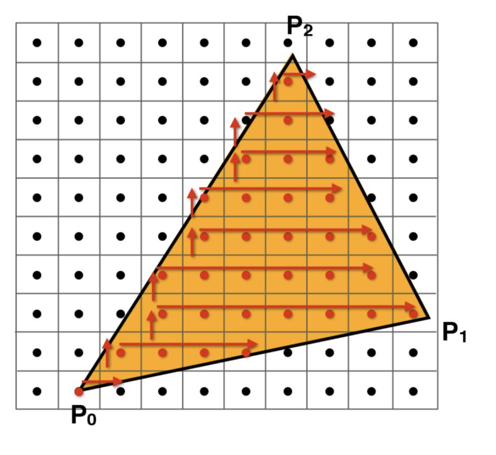
Incremental Triangle Traversal for rendering triangles.
To summarize my code, the algorithm first checks if the triangle is given in a clockwise or counterclockwise manner. The code then finds the bounding box of each triangle. Then from the bounding box we know that one of the vertices of the triangle must be at one of the corners of the bounding box. Therefore, at the beginning of the code we need to find which pair of coordinates corresponds to one of the corners of the bounding box in order to find the starting point of our algorithm. There are four possible cases illustrated by the below diagram:
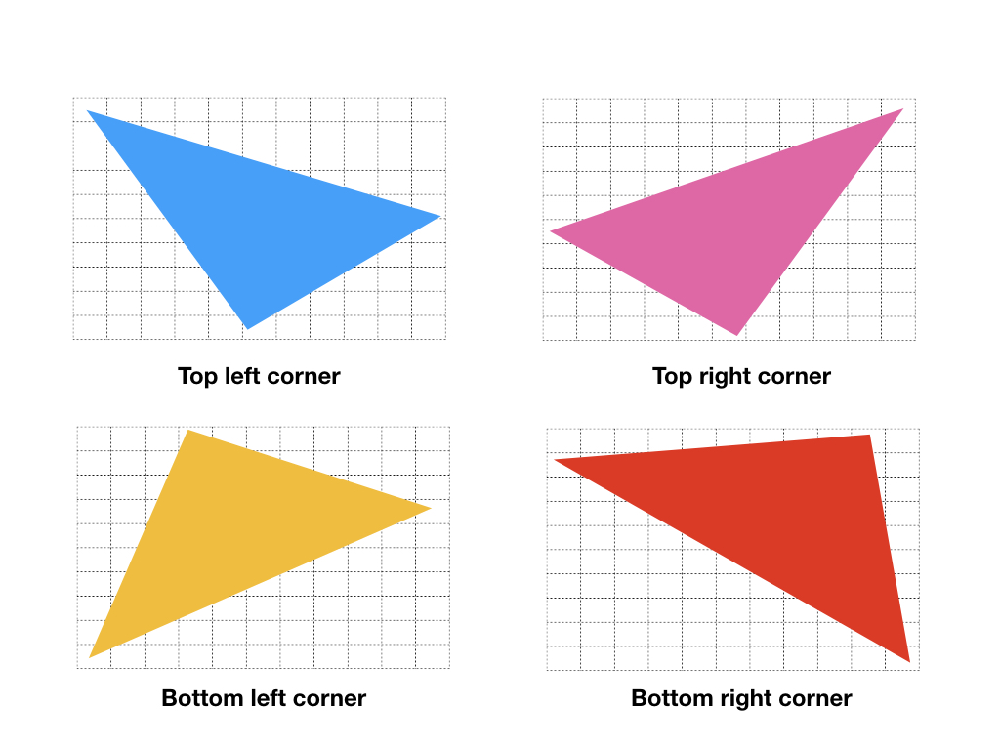
Four possible start cases.
From there we need to find if the center of the pixel of that corner is inside the triangle. Depending on which corner the pixel and whether the pixel is in the triangle we need to traverse the screen horizontally or vertically.
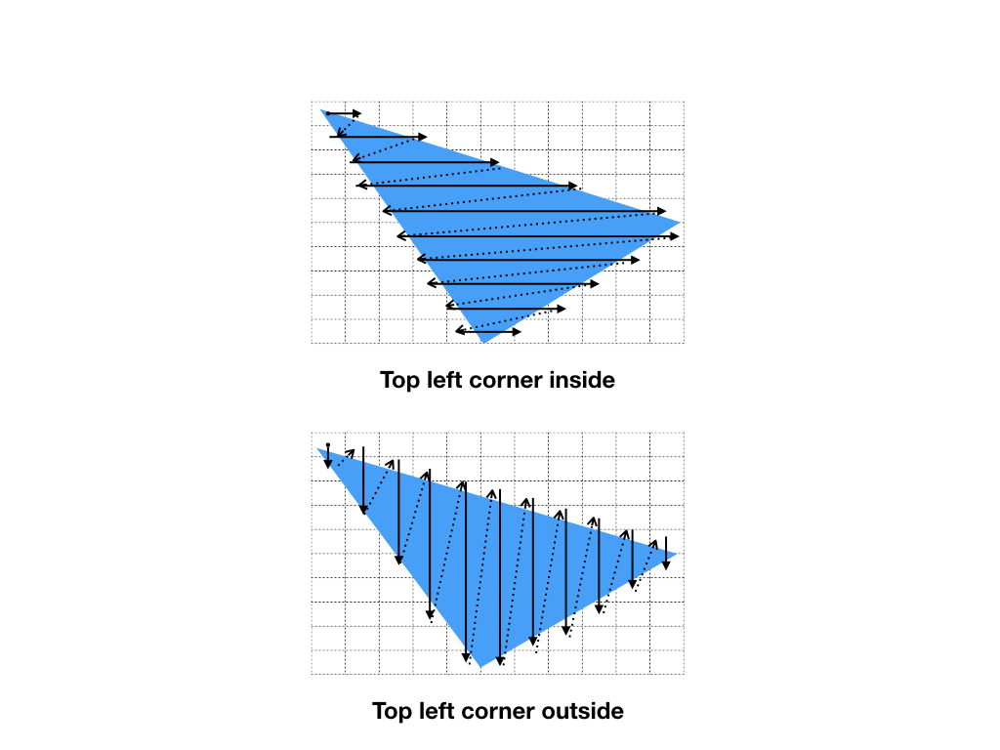
Two cases for going horizontally or vertically.
We then use the line equations from the previous part to determine if a pixel is inside a triangle. Once a pixel is not inside the triangle anymore we can go to the next line (there are a couple of edge cases that you can read about in my code depending on the direction of the traversal and the starting point). To decide the starting point of the next line, the algorithm looks at the position of the previous two points and calculates the position of the next point by calculating the slope of the edge and going to the next line. Once the bounding box has been traversed the code stops. The most difficult part of this algorithm was to get all the edge cases correct.
I obtained the following images when running the algorithm described in "Method and apparatus for triangle traversal process in graphic rasterization". This technique is much faster than the brute force approach implemented above.
|
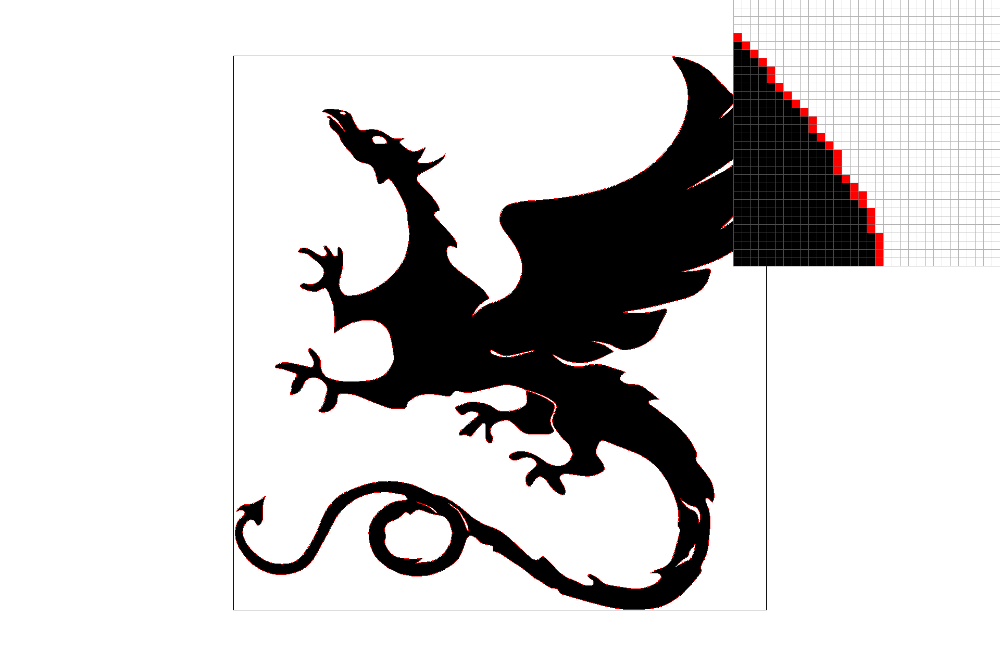
SVG3 Generated in 0.161359s.
|
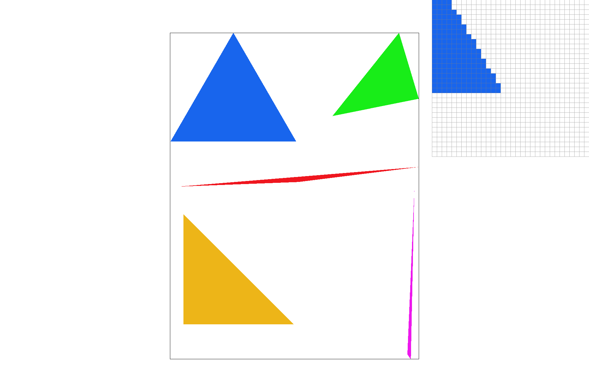
SVG4 Generated in 0.079019s.
|
|
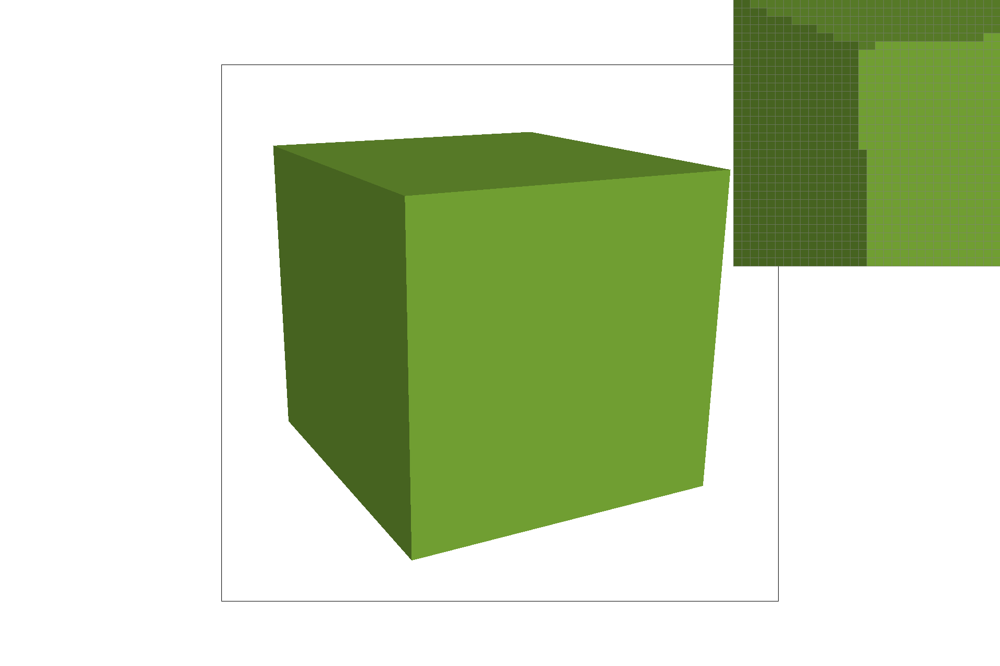
SVG5 Generated in 0.185894s.
|
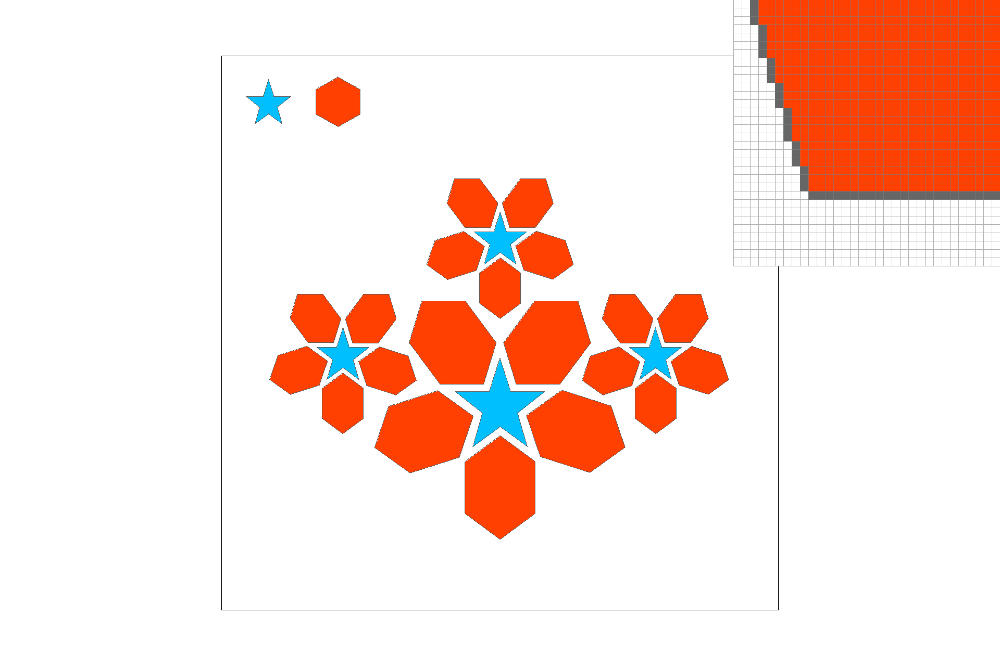
SVG6 Generated in 0.087716s.
|
Part 2: Antialiasing triangles
In this part, I implemented super sampling. Each pixel is now divided in $\sqrt{sample\_rate} \cdot \sqrt{sample\_rate}$. Each pixel therefore now has a SampleBuffer to store the colors of the subpixels. The code therefore now iterates to fill every sub-pixel with its correctly sampled color for every SampleBuffer instance. It then averages the value of each subpixel for a given pixel.
The first step that I took is that I added 2 for loops inside the x and y for loops in
DrawRend::rasterize_triangle that would iterate over the subpixels values. There is now $\sqrt{sample\_rate}$ subpixels in the x direction and $\sqrt{sample\_rate}$ subpixels in the y direction. The line equation now needs to be given the following value as the x value because the sub pixel length now needs to be taken into consideration:
$$
\begin{aligned}
x &= x_p + s_x \cdot subPixelLength + \frac{subPixelLength}{2}\\
&=x_p + s_x \cdot \frac{1}{\sqrt{sample\_rate}} + \frac{\frac{1}{\sqrt{sample\_rate}}}{2}\\
&=x_p + \frac{s_x}{\sqrt{sample\_rate}} + \frac{1}{2\sqrt{sample\_rate}}\\
&=x_p + \frac{2\cdot s_x + 1}{2\sqrt{sample\_rate}}
\end{aligned}
$$
where $x_p$ is the pixel x coordinate value and $s_x$ is the subpixel x coordinate value.
The code is also now using
samplebuffer[y][x].fill_color(sy, sx, color) instead of
samplebuffer[y][x].fill_pixel(color) to color the subpixels.
The
SampleBuffer::get_pixel_color is simply iterating through all the values in the pixel by adding all of the pixel values and then dividing that number by the number of pixels giving us the average pixel value.
We get the following 3 images using this technique:
|
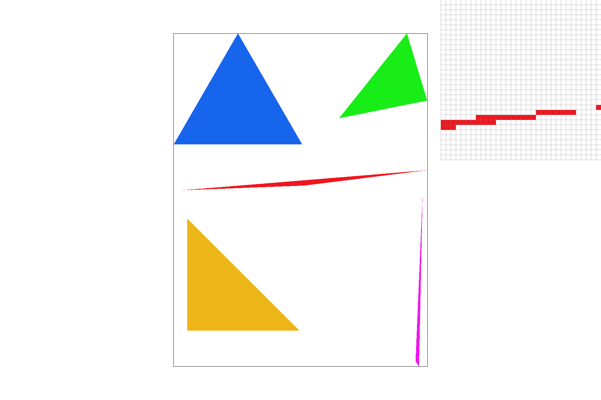
basic/test4.svg at supersample rate of 1.
|
basic/test4.svg at supersample rate of 4.
|
|
basic/test4.svg at supersample rate of 16.
|
Antialiasing makes all of the edges of the triangle smoother as each pixel is divided in mutliple sub-pixel corresponding to the number of samples taken. Once the pixels are divided into subpixels the algorithm samples the color at each of these locations and returns the average color of all of the subpixels. This technique removes aliasing and pixelated edges.
EXTRA CREDIT: Jittered sampling.
In this part, I implemented jittered sampling. Jittered sampling is very similar to the regular sampling technique that we used except that the color value that we measure is not at the center of the pixel and is instead measured at a random place within the pixel as shown in the following image:
Running jittered sampling gave us the following image:
|
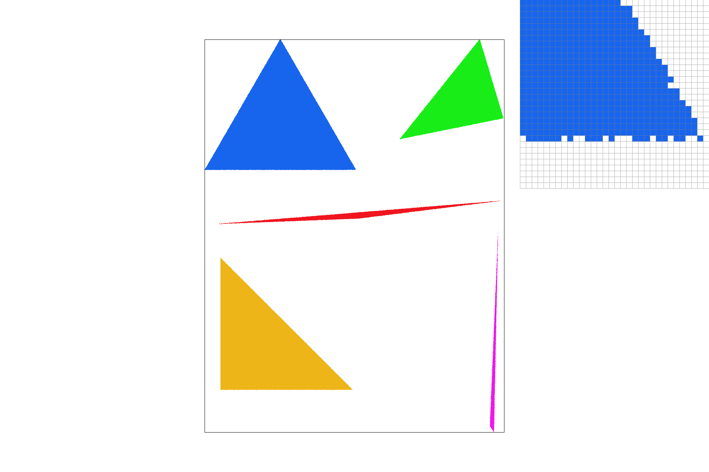
basic/test4.svg using jittered sampling.
|
When running jittered sampling the borders are a lot less smooth then with super sampling. However, the code runs much faster. Jittered sampling ran in 0.112889s while supersampling could take 1 to 2s.
Part 3: Transforms
In this part, I copied the matrices from the transforms slides. I then drew a ballerina robot.
EXTRA CREDIT: Rotate the viewport
For this extra credit, I decided to map the C and K keys of the keyboard to rotating an image clockwise and counter-clockwise.
By looking through the code I saw that there are two variables of interest
svg_to_ndc and
ndc_to_screen. In order to implement the rotation, I decided to only modify the
ndc_to_screen variable.
ndc_to_screen is of type
Matrix3x3 and is assigned the following value:
\[
ndc\_to\_screen = \begin{bmatrix}
scale & 0 & \frac{width - scale}{2} \\
0 & scale & \frac{height - scale}{2} \\
0 & 0 & 1
\end{bmatrix}
\]
If we have a coordinate $(x,y,z)$ in ndc space, then the coordinate on the screen would be:
\[
\begin{aligned}
\begin{bmatrix}
x_{screen}\\
y_{screen}\\
z_{screen}
\end{bmatrix} &= ndc\_to\_screen \cdot \begin{bmatrix}
x_{ndc}\\
y_{ndc}\\
z_{ndc}
\end{bmatrix}\\
&= \begin{bmatrix}
scale & 0 & \frac{width - scale}{2} \\
0 & scale & \frac{height - scale}{2} \\
0 & 0 & 1
\end{bmatrix}\cdot \begin{bmatrix}
x_{ndc}\\
y_{ndc}\\
z_{ndc}
\end{bmatrix}\\
&= \begin{bmatrix}
scale \cdot x_{ndc} + z_{ndc} \cdot \frac{width - scale}{2}\\
scale \cdot y_{ndc} + z_{ndc} \cdot \frac{height - scale}{2}\\
z_{ndc}
\end{bmatrix}\\
\end{aligned}
\]
the $scale$ variable is determined by the size of the window. At first from the matrix I thought that by inverting the $x$ and $y$ variable in the matrix we can rotate the image clockwise. The resulting $ndc\_to\_screen$ matrix would be:
\[
\begin{bmatrix}
0 & scale & \frac{width - scale}{2} \\
scale & 0 & \frac{height - scale}{2} \\
0 & 0 & 1
\end{bmatrix}
\]
However, by simply making this change I obtained the following image when rotation the image counter clockwise:
|
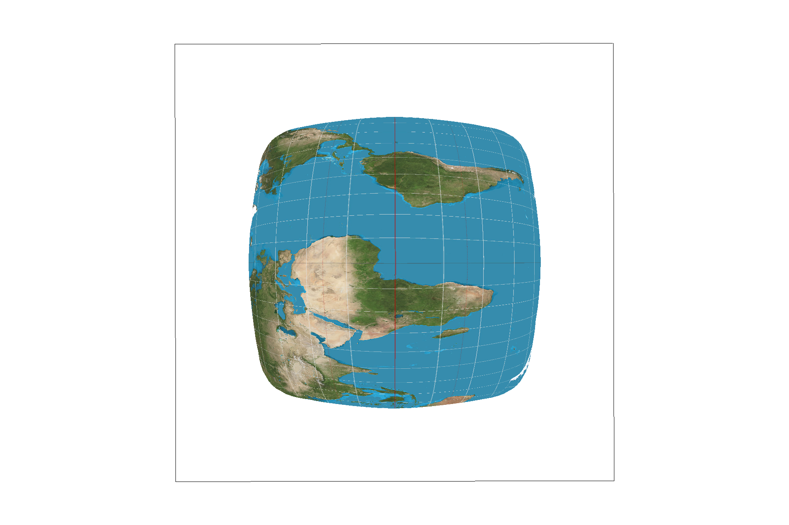
Counterclowise rotation changing only $ndc\_to\_screen$.
|
The image is rotate however, it is flipped vertically. I then decided to write a function to flip image vertically called
flip_vertically(). The function would take a matrix of pixels as an input and reverse all the rows in the matrix. The first row will become the last row and the last row will become the first row. The variable
samplebuffer contains the nested array of pixels. In order to reverse all of the rows, I simply called the
std::reverse function on the nested array. I then obtained the following image when rotation the image counter clockwise:
|
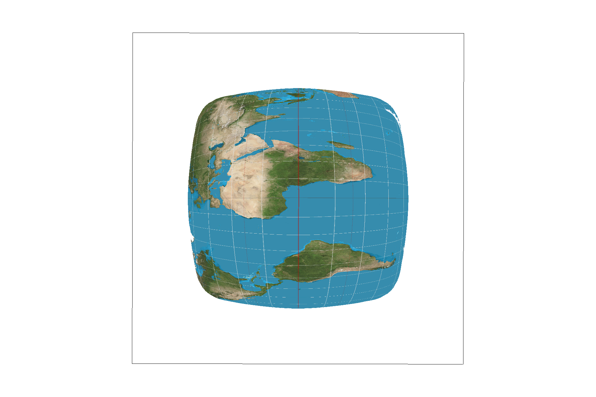
Counterclowise rotation.
|
In order to turn an image counterclockwise twice, I initially thought that I simply needed call the
flip_vertically() function without changing the $ndc\_to\_screen$ variable. However, I obtained the following image:
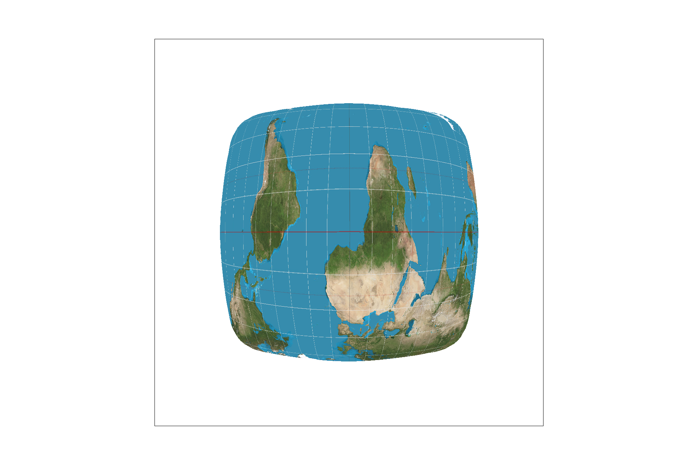
Two rotate counter-clockwise Image only calling flip_vertically().
|
In order to properly flip the image verticallyby doing two clockwise rotation I need to also flip the image horizontally. I then decided to implement the
flip_horizontally() function. The function would reverse all of the columns of the matrix. In order to shift all of the columns of the
samplebuffer matrix, I need to call the
std::reverse on every nested vector. I iterate through all the vectors and call the reverse function. I then obtained the following image by calling
flip_vertically() and then
flip_horizontally().
|
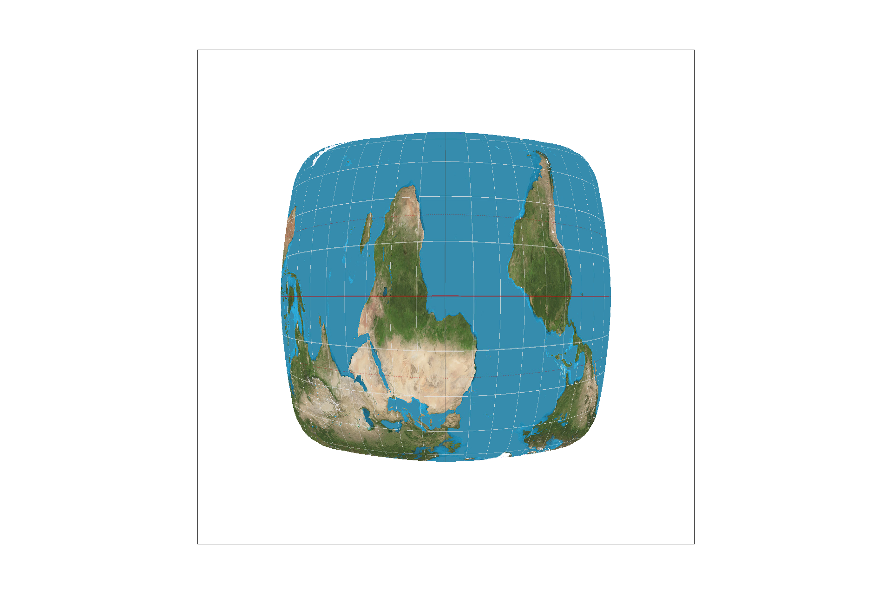
Two rotate counter-clockwise Image.
|
In order to rotate the image clockwise once, I need to first change $ndc\_to\_screen$ to:
\[
\begin{bmatrix}
0 & scale & \frac{width - scale}{2} \\
scale & 0 & \frac{height - scale}{2} \\
0 & 0 & 1
\end{bmatrix}
\] in order to rotate the image.
Then I need to call the
flip_horizontally() function on the
samplebuffer matrix. I obtained the following image:
|
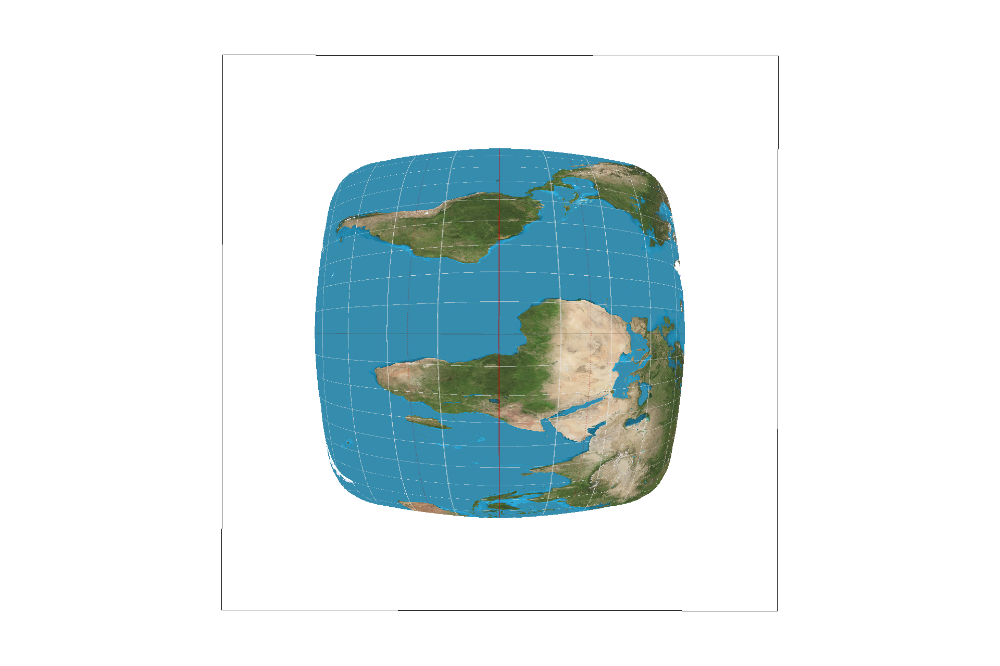
Rotate clockwise Image.
|
I therefore have 4 states of rotation that I execute once the state is called. I added a
rotation variable that ranges from 0-3 and increases or decreases depending on whether the K or C key is pressed. The C key rotates the image clockwise while the K key rotates the image counterclockwise. To make the value range between 0 and 3 I use the modulo operator.
Section II: Sampling
Part 4: Barycentric coordinates
I then implemented the barycentric coordinates for the svg file parser. Barycentric coordinates defines a point according to the position of three other points. Each of three points are weighted according to three variables $\alpha$, $\beta$, and $\gamma$. In other words, the position of that point is defined according to the following equation:
\[
V=\alpha V_A + \beta V_B + \gamma V_C
\]
where
\[
1=\alpha + \beta + \gamma
\]
In practice barycentric coordinates can be used for several different use cases. They can be used for determining a texture or a color of a specific point in the scene or even determine if a point is inside a triangle. For example, in the image below barycentric coordinates were used to determine the color of every point in a triangle. The upper vertex of the triangle was green, the lower left was red, and the lower right was blue. Each point in the triangle has a color that is defined according to how close it is to the three vertices. As we move closer to one of the vertices of the trinagle, the color of the point in the triangle is going to be weighted more according to the color of the closer vertex of the triangle.
|
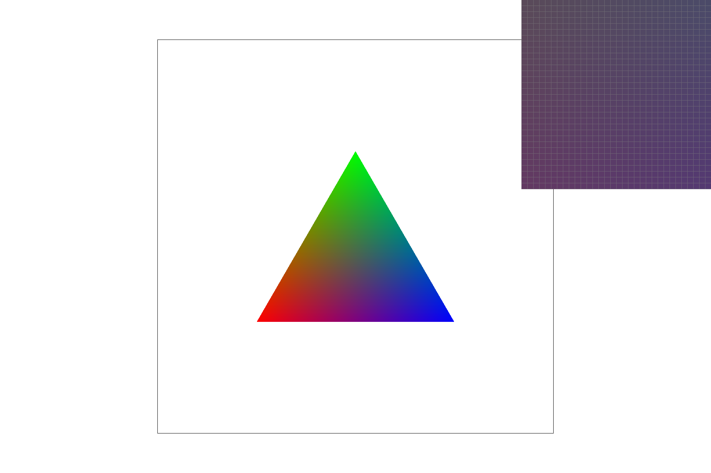
Single triangle with one red, one green, and one blue vertex.
|
For a triangle with vertices $A$, $B$, and $C$, barycentric coordinates can be calculated by using the following formulas:
\[
\begin{aligned}
\alpha &= \frac{-(x-x_B)(y_C-y_B)+(y-y_B)(x_C-x_B)}{-(x_A-x_B)(y_C-y_B)+(y_A-y_B)(x_C-x_B)}\\
\beta &= \frac{-(x-x_C)(y_A-y_C)+(y-y_C)(x_A-x_C)}{-(x_B-x_C)(y_A-y_C)+(y_B-y_C)(x_A-x_C)}\\
\gamma &= 1 - \alpha - \beta
\end{aligned}
\]
The formulas can be derived by calculating the line equations and determining how close the vertices are from the point calculated.
I then generated a png screenshot of svg/basic/test7.svg with default viewing parameters and sample rate 1.
|
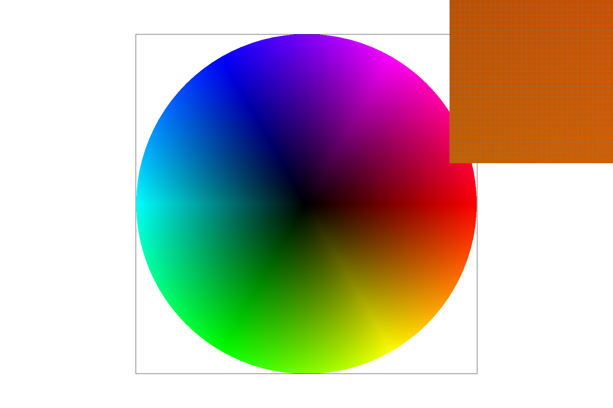
svg/basic/test7.svg.
|
Part 5: "Pixel sampling" for texture mapping
Pixel sampling is a technique to interpolate colors when scaling an image. For example, when applying a texture on an image, pixel sampling is required in order to make sure that each point on the surface has a value from the texture. In other words, we want to have each barycentric coordinate to map to a point in the $(u,v)$ map of the texture.
There are 2 different ways pixel sampling can be applied in this part. Nearest neighbor sampling gets the nearest pixel in the $uv$ mapping from the texture and then returns it. Bilinear gets the four nearest pixels in the $uv$ mapping from the texture and uses linear interpolation to get the color of the pixel. This technique allows to weight more the closer pixels then the further pixels among the 4 selected ones. For bilinear sampling the four closest points in the uv map are choosen as following:
|
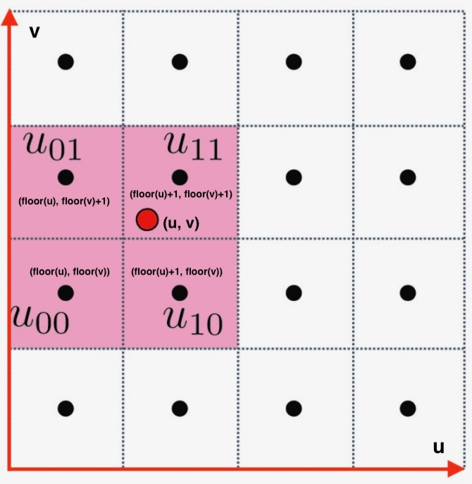
Coordinates of bilinear sampling.
|
We will now compare both techniques side by side using examples:
 Original Map image.
Original Map image.
|
 Nearest neighbor sampling at sample rate 1 of svg/texmap/test1.svg.
Nearest neighbor sampling at sample rate 1 of svg/texmap/test1.svg.
|
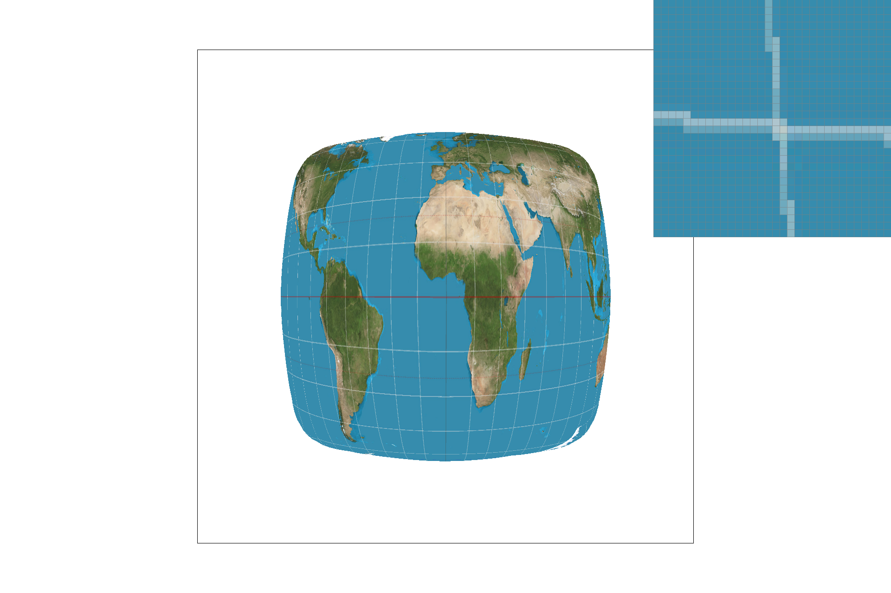
Bilinear sampling at sample rate 1 of svg/texmap/test1.svg.
|
Using nearest neighbor sampling on
svg/texmap/test1.svg clearly shows that the white lines have discontinuities in some areas. The white lines using bilinear sampling are much smoother. This is due to the fact that during nearest neighbor sampling, the algorithm only takes the closest pixel from the uv coordinate. The bilinear sampling on the other hand takes an average of the four points around a choosen coordinate. When magnifying an image, the image will appear more blurry using bilinear sampling. When using nearest neighbor sampling during magnification, the image will have some discontinuities. Bilinear sampling in this case is better as we do not have any discontinuities in the lines.
|
Nearest neighbor sampling at sample rate 1 of svg/texmap/test6.svg.
|
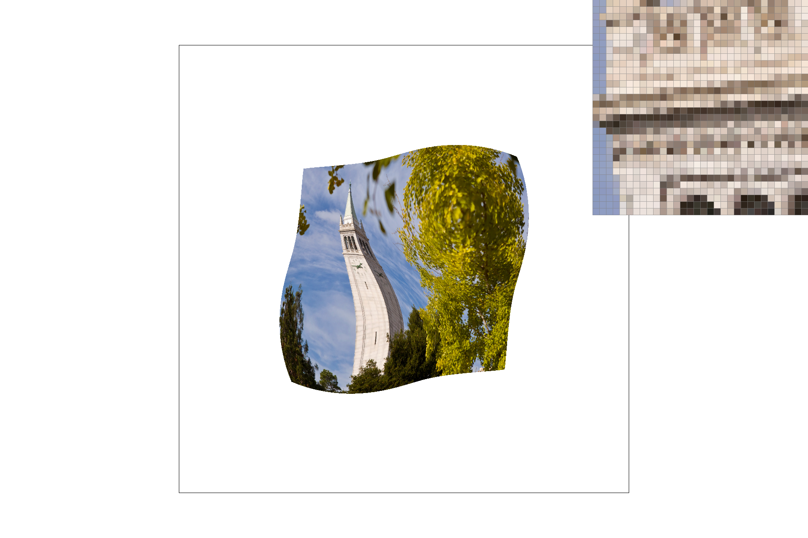
Bilinear sampling at sample rate 1 of svg/texmap/test6.svg.
|
|
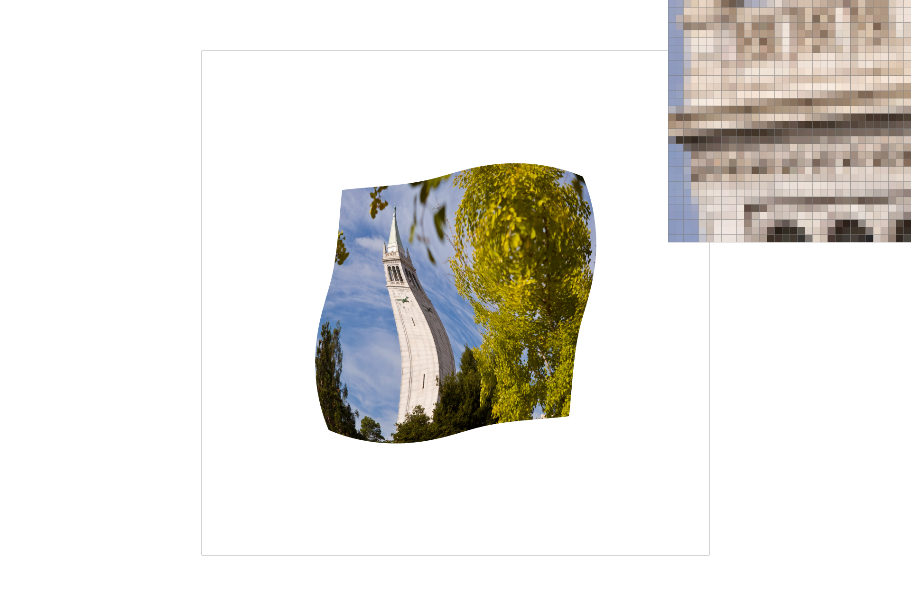
Nearest neighbor sampling at sample rate 16 of svg/texmap/test6.svg.
|
Bilinear sampling at sample rate 16 of svg/texmap/test6.svg.
|
In both of these images we can clearly see that increasing the sample rate makes the images look less pixelated. The difference between bilinear and nearest neaighbor sampling is very minimal. This may be due to the fact that there is minification in the image meaning that there a small part of the texel that maps to a large amount of pixels. When applying bilinear filtering the algorithm will interpolate neighboring points, however, as these neighboring points are the same the result will be the same as the nearest neighbor sampling technique. Therefore, when there is minification there is often not a big difference between the two techniques.
Most of the differences between the two techniques can be seen when there are neighboring points with an two areas of high contrast. The bilinear sampling will smoothing the change of color difference, while the nearest neighbor sampling will simply take the color at each edge. In the image above, we can see slighlty that the differences in colors for regions of high contrast is smoother and more blurry in the bilinear sampling case.
Part 6: "Level sampling" with mipmaps for texture mapping
We have seen a texture can map to different places in an image. For example, when there is an image with perspective, the background of the image requires less detail then the front. As a result, the texture in the front will be more detailed while the texture in the back will be blurry. In order to store all of this same texture but with different attributes we need to store them in a mipmap having multiple different levels. The levels of the mipmap will store the texture at a different sampling rate. If an image has a high level then it will be more downsampled. If for example we have pixels with high uv coordinates than this means that they do not need high level of detail while if close pixels have uv coordinates that are close then we need to take a texture with a lot of detail.
We also had to implement trilinear sampling. In trilinear sampling we use the mipmap level above and below to calculate the texture value on the screen. In other words, the nearest pixel takes into consideration the coordinate values of neighboring points in a 2D plane while the trilinear sampling takes into consideration texture points in 3 dimension.
Level sampling is therefore a technique to map points in a scene to a mipmap when different levels of downsampling is needed for the texture in different parts of the scene. The level of the mipmap is choosen according to the following formula:
\[
level = \log_2\left(\max \left(\sqrt{\left(\frac{du}{dx}\right)^2+\left(\frac{dv}{dx}\right)^2}, \sqrt{\left(\frac{du}{dy}\right)^2+\left(\frac{dv}{dy}\right)^2}\right)\right)
\]
I used the following image to show the difference between the different sampling techniques:
In the image below we can see that bilinear sampling is better than nearest neighbor sampling. In nearest neighbor sampling the lines are jaggy and not continuous while in bilinear sampling the lines are more smooth. This is due to the fact that bilinear sampling averages the values are a certain point making the image smoother.
|
Level 0 Nearest neighbor sampling at sample rate 1 of svg/texmap/test7.svg rendered in 0.109296s.
|
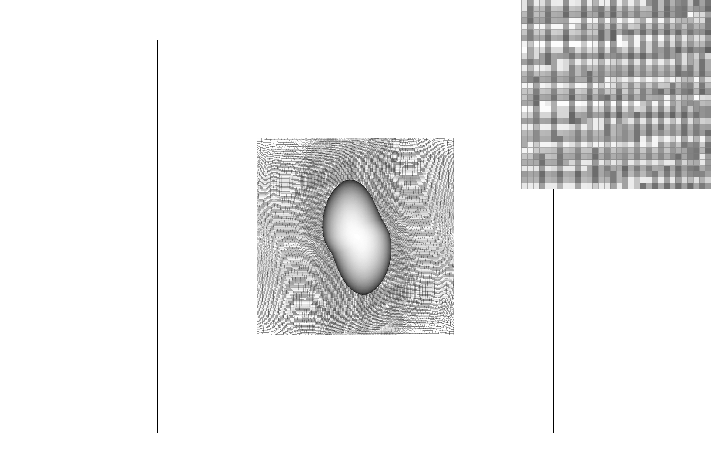
Level 0 Bilinear sampling at sample rate 1 of svg/texmap/test7.svg rendered in 0.113784s.
|
In the images below, we can see that nearest level sampling improves the image quality is better as more neighboring values are taken into account. The images also present less aliasing. The nearest level sampling technique is slower than the zero level sampling technique as we have to do more calculations to determine the level and get the pixels from the different levels of the mipmap. The best technqiue seems to be coming from the trilinear sampling technique as we are looking at the color values from different levels of the mipmap making the image smoother and more accurate.
 Nearest Level Nearest neighbor sampling at sample rate 1 of svg/texmap/test7.svg rendered in 0.120024s.
Nearest Level Nearest neighbor sampling at sample rate 1 of svg/texmap/test7.svg rendered in 0.120024s.
|
 Nearest Level Bilinear sampling at sample rate 1 of svg/texmap/test7.svg rendered in 0.142696s.
Nearest Level Bilinear sampling at sample rate 1 of svg/texmap/test7.svg rendered in 0.142696s.
|
|
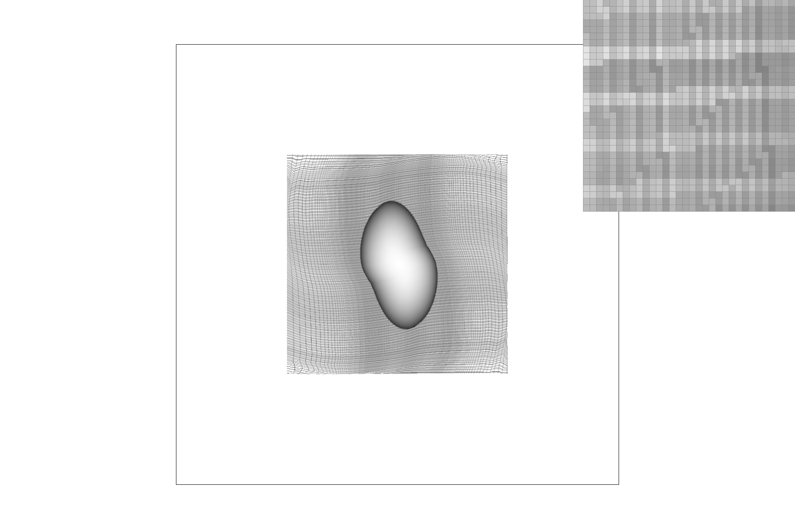
Bilinear Level Nearest neighbor sampling at sample rate 16 of svg/texmap/test7.svg rendered in 0.141808s.
|
By zooming in there seems to be more aliasing then when zooming out and the texture is much less accurate.
|
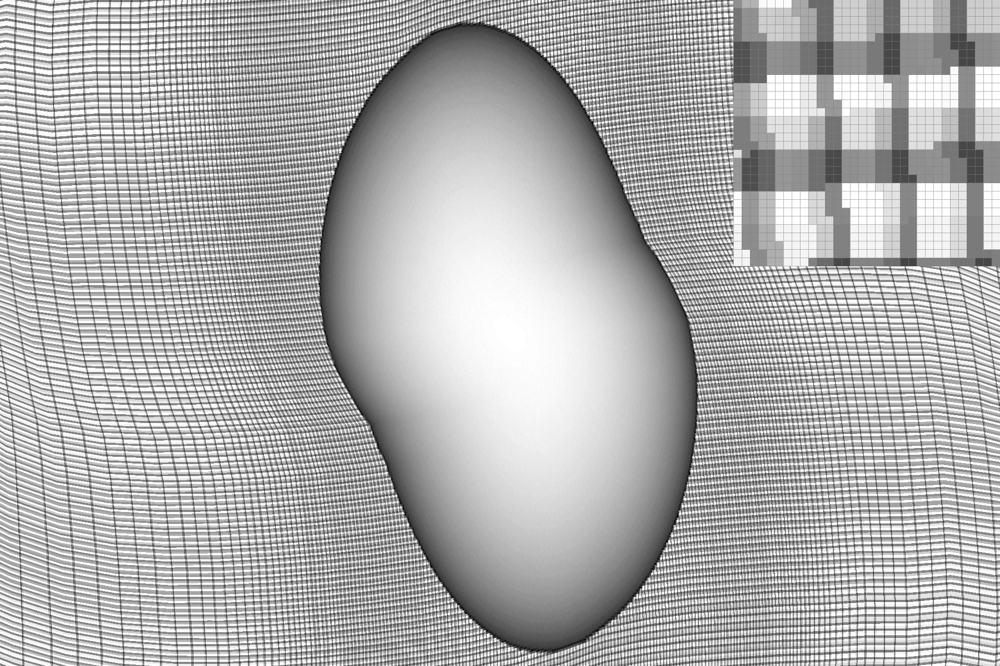
Level 0 Nearest neighbor sampling at sample rate 1 of svg/texmap/test7.svg zoomed in.
|
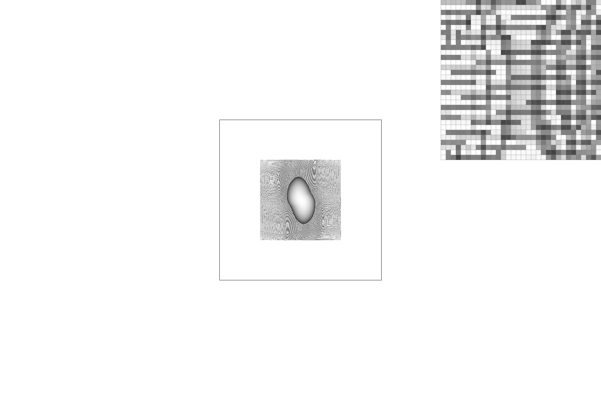
Level 0 Nearest neighbor sampling at sample rate 1 of svg/texmap/test7.svg zoomed out.
|
EXTRA CREDIT: Summed Area Table
NOTE: I have implemented the summed area table code in
texture.h, however I have not found any good examples to use it as from my understanding Summed area table are good for batch calculating areas of pixels. In our image processing SVG parser we never need to calculate batches of pixels. I thought about calculating the value all of the surrounding neighbors from one pixel and average the value but that wouldn't make sense in a pratical sense as the image would become very blurry and from an efficiency point of view the code will be very slow.
I'll now walkthrough my code. In the
init() function I am first initializing the summed area table to a vector containing $width \cdot height$ color element. I first copy the color of the top left corner at position $row=0$ and $column=0$. Then I iterate through all the elements of $row=0$ and fill the current value by adding the sum of the last cell to the current cell. Similarly I then iterate through the cells of $column=0$ and add the previous sum to the current value of the cell. Once I have the first and last row filled up, I iterate though each cell of the table starting at $x=1$ and $y=1$, until $x=width$ and $y=height$. The value of the current cell is determine using the following equation:
\[
I(x,y)=i(x,y)+I(x,y-1)+I(x-1,y)-I(x-1,y-1)
\]
where $I(x,y)$ is the value of the cell of the sum table and $i(x,y)$ is the value of the pixel.
Then to calculate the value of a given area of pixels going from $A$ to $B$:
|
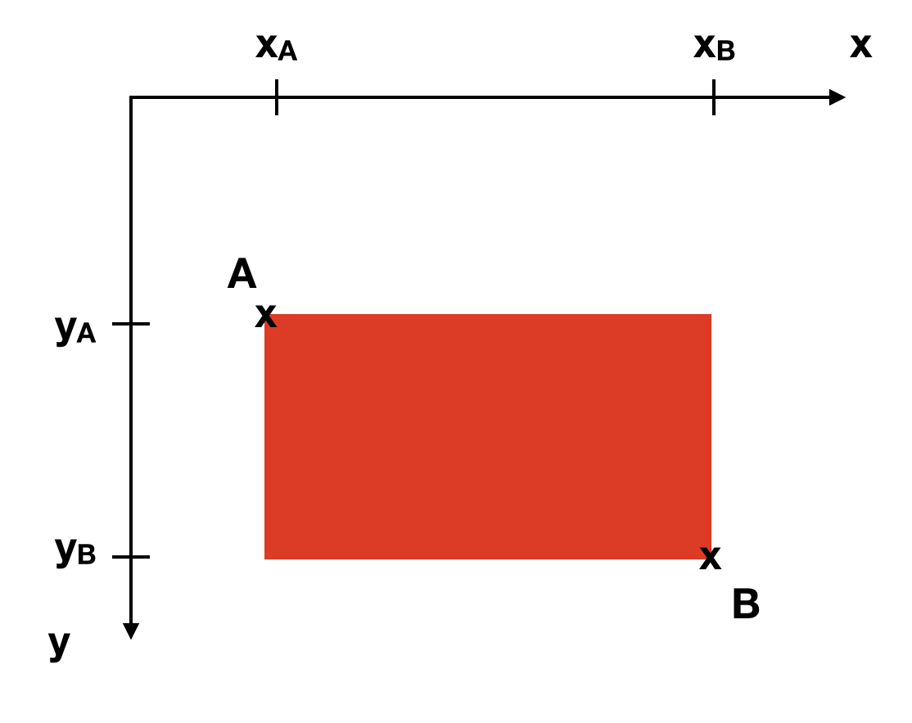
Area of sum area table.
|
The sum of the pixel values in the given area is given by the following formula:
\[
I(x+1,y+1)-(I(x,y+1)+I(x+1,y)-I(x,y))
\]
Then to get the RGB value I divide the color by the number of pixels in the area. My
getSumRect function calculates the sum above. This technique allows to calculate quickly the sum of pixels in a large area of pixels. The initiliazation is relatively slow as we need to add up the sums individually but once the sums are calculated in the initialization, getting the sum throughout the program is done much quicker then if the sum table did not exist. You will find below an example sum area table:
Section III: Art Competition
If you are not participating in the optional art competition, don't worry about this section!
Part 7: Draw something interesting!
I used Adobe Illustrator to draw a bear made out of triangles and then rendered the svg using the SVG parser that I coded.